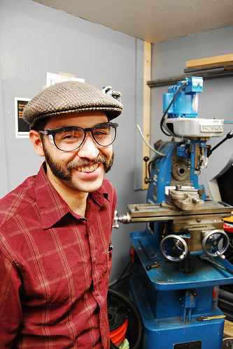

On Monday, Alex C. made his debut as an instructor for the big blue mill. He's only been with us since August, but has clearly launched himself into some stellar volunteerism.
Alex recently graduated from Chabot College in Hayward, California with two AS degrees, one in machine tool technology and the other in NC programming. He said he spent several years tutoring in math and has enjoyed teaching people how to do craft projects, so he naturally gravitated to teach around at the lab as a way to jump into the community. He's also been helping to put together the content for the CNC mill class on Friday this week.
He said he first became interested in machining after his fiance, Anna, who was working on her now completed PhD in Physics at UC Berkeley, took an intro class to machining at the physics department machine shop. Alex said he was especially intrigued by the machinist who ran the shop, whose whole job consisted of teaching physics students about machine tools and helping them fabricate parts for experiments. Alex said that kind of job really appeals to him, so helping HeatSync as a mill instructor is actually very symbiotic. He said he is hoping to gain more experience in machining and teaching machining, and while it will take time before he's ready for a job at a university shop, he said this is definitely a step in the right direction.